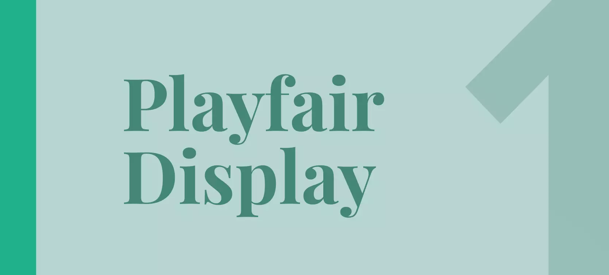
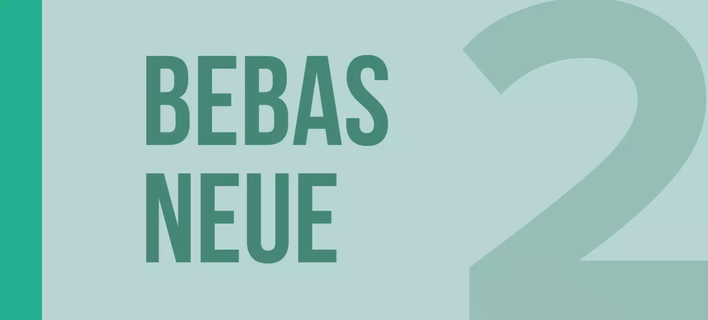
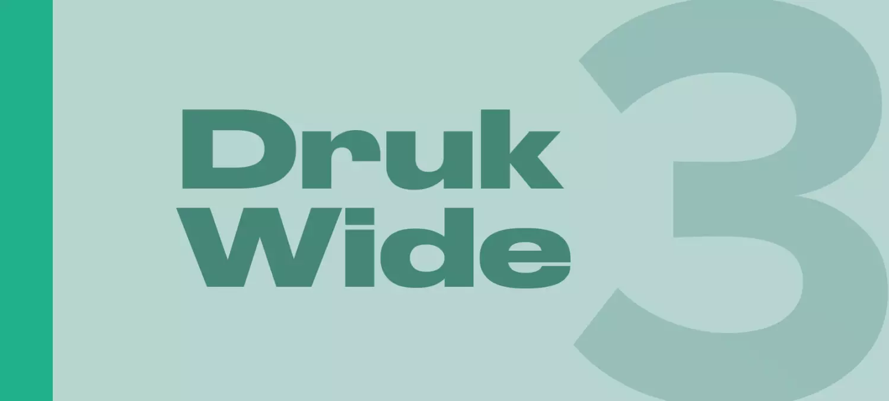
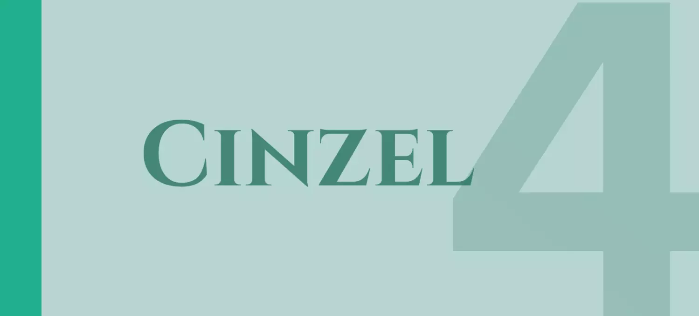
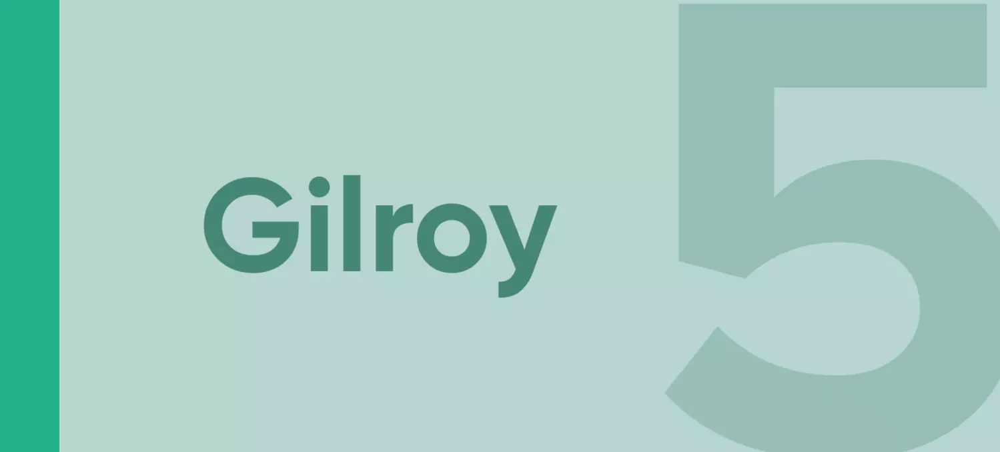
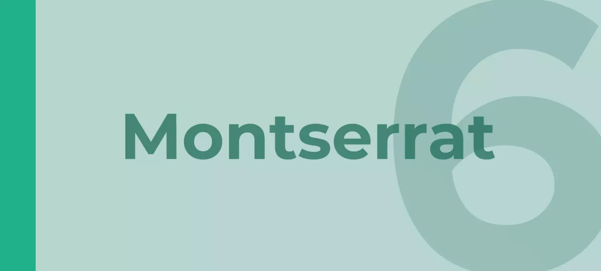
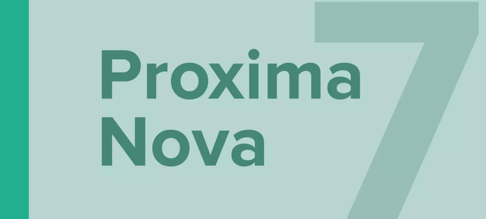
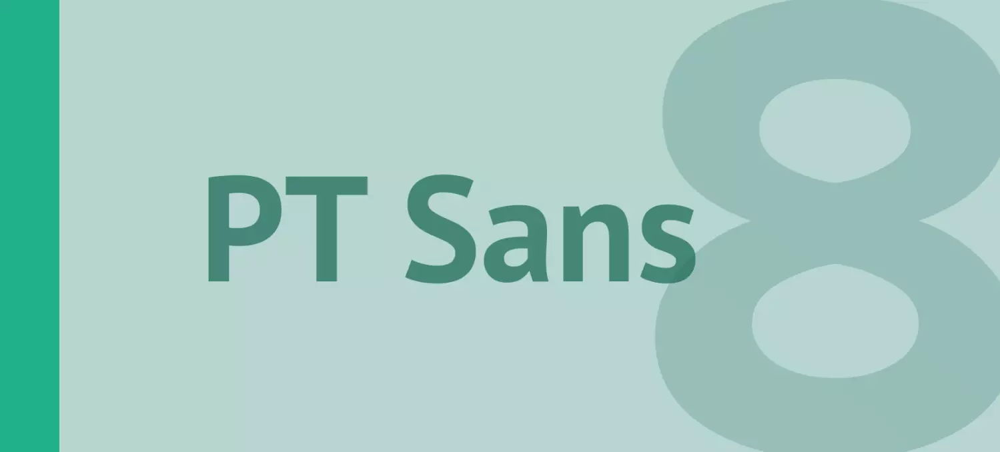
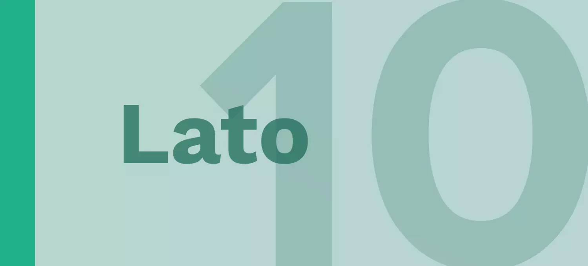

Playfair Display
Со времен просвещения в конце 18-го века широкие перья были заменены острыми стальными ручками. Это повлияло на типографские буквы, становясь все более оторванными от письменных. Разработки в области технологий печати, чернил и изготовления бумаги позволили печатать буквы с высокой контрастностью и тонкими линиями. Проект Playfair возглавляет Клаус Эггерс Соренсен, дизайнер шрифтов из Амстердама, Нидерланды. Как видно из названия, Playfair Display хорошо подходит для заголовков. Его можно установить в заголовках новостей или для стилистического эффекта в любых заголовках.
Bebas Neue
Bebas Neue свободный sans serif, создан Ryoichi Tsunekawa. Но теперь Bebas пополнился четырьмя новыми весами — Thin, Light, Book, и Regular, добавленных. Шрифт отлично подойдет для заголовков, навигации на сайте, рекламных постеров и многого другого.
Druk Wide
Семейство Druk Wide было создано в 2013 году специально для нового дизайна «Etc.» ― раздела о стиле и культуре в Bloomberg Businessweek. Оно прежде всего отдаёт дань уважения нидерландским дизайнерам первой половины XX века, активно использовавшим широкие, насыщенные гротески для привнесения в работы строгой шрифтовой иерархии (например, в каталогах Городского музея Амстердама, выполненных Виллемом Сандбергом).
Cinzel
Cinzel - это шрифт, вдохновленный римскими надписями первого века и основанный на классических пропорциях. Однако это не просто возрождение, в то время как это передает всю древнюю историю латинского алфавита, он также объединяет современное искусство.
Gilroy
Гилрой - это современный шрифт без засечек с геометрическим прикосновением. Семейство шрифтов Qanelas. Разработан с мощными функциями opentype. Каждый вес включает расширенную языковую поддержку (+ кириллицу), фракции, табличные фигуры, стрелки, лигатуры и многое другое. Идеально подходит для графического дизайна. Он может легко работать для веб-сайтов, вывесок, корпоративных, а также для редакционного дизайна.
Montserrat
Старые плакаты и вывески в традиционном районе Монтсеррат в Буэнос-Айресе вдохновили Джульетту Улановскую на разработку этого шрифта и спасение красоты городской типографии, появившейся в первой половине двадцатого века. Письма, которые вдохновили этот проект, имеют работу, преданность делу, заботу, цвет, контраст, свет и жизнь, день и ночь! Проект Монтсеррат начался с идеи спасти то, что находится на Монтсеррате.
Proxima Nova
Семейство Proxima Nova - это полная переработка Proxima Sans (1994). Исходные шесть шрифтов (три веса с курсивом) были расширены до 48 полнофункциональных шрифтов OpenType. Существуют три ширины: Proxima Nova, Proxima Nova Condensed и Proxima Nova Extra Condensed. Каждая ширина состоит из 16 шрифтов - семь весов с соответствующими курсивом. Стилистически, Proxima Nova преодолевает разрыв между шрифтами, такими как Futura и классическими без засечек. В результате получается гибрид, сочетающий гуманистические пропорции с несколько геометрическим внешним видом.
PT Sans
PT Sans - это семейство типов универсального применения. Он состоит из 8 стилей: обычный и жирный шрифт с соответствующим курсивом образует стандартное семейство компьютерных шрифтов. Дизайн сочетает в себе традиционный консервативный внешний вид с современными тенденциями гуманистического без засечек и характеризуется повышенной читаемостью. Эти функции помимо обычного использования в бизнес-приложениях и печатных материалах сделали шрифты весьма полезными для указателей, схем, экранов информационных киосков и других объектов городских визуальных коммуникаций. Дизайн шрифта разработан Александром Корольковым.
Work Sans

Work Sans - это семейство шрифтов, основанное на ранних гротесках, таких как Стивенсон Блейк, Миллер и Ричард и Бауэршен Гиссерей. Обычный вес и другие члены семейства оптимизированы для использования текста на экране при средних размерах (14–48 пикселей), а также могут использоваться при печати. Шрифты, приближенные к экстремальным весам, предназначены для использования как в Интернете, так и в печати. В целом, функции упрощены и оптимизированы для разрешения экрана.
Lato
Lato - это семейство шрифтов без засечек, созданное летом 2010 года варшавским дизайнером Лукашом Дзедзичем («Лато» по-польски означает «лето»). В декабре 2010 года семья Лато была опубликована по лицензии Open Font его литейным TyPoland при поддержке Google. За последние десять или около того лет, в течение которых Лукаш занимался проектированием шрифтов, большинство его проектов были основаны на конкретной задаче проектирования, которую он должен был решить. С Лато все было по-другому. Первоначально семья была задумана как набор корпоративных шрифтов для крупного клиента, который в итоге решил пойти по другому стилистическому направлению, поэтому семья стала доступной для публичного выпуска.